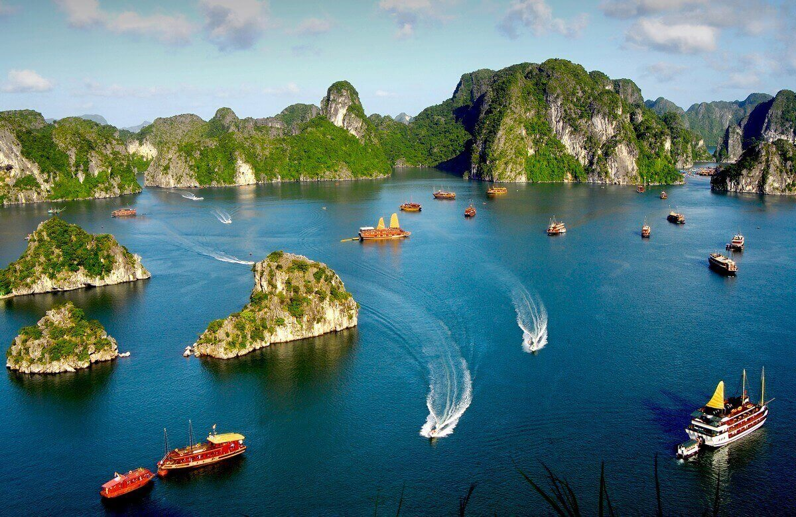

About This Project
The sea water is crystal clear turquoise, calm, creating a sense of peace and relaxation. Many limestone islands rise from the water, with strange and diverse shapes, covered with green trees – typical of the karst topography of Ha Long Bay. Tourist boats and small boats move or are anchored in the bay, showing busy tourist activity. The classic white or dark brown boats bear a strong Asian imprint. The sky is pale blue and clear, showing beautiful weather, with soft light shining on the scenery, making the sea and rocky mountains more sparkling.